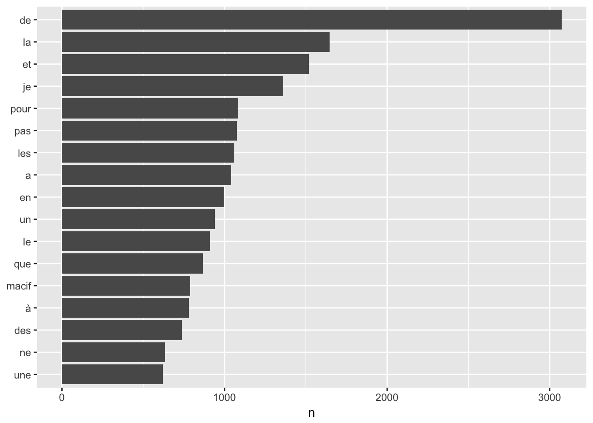
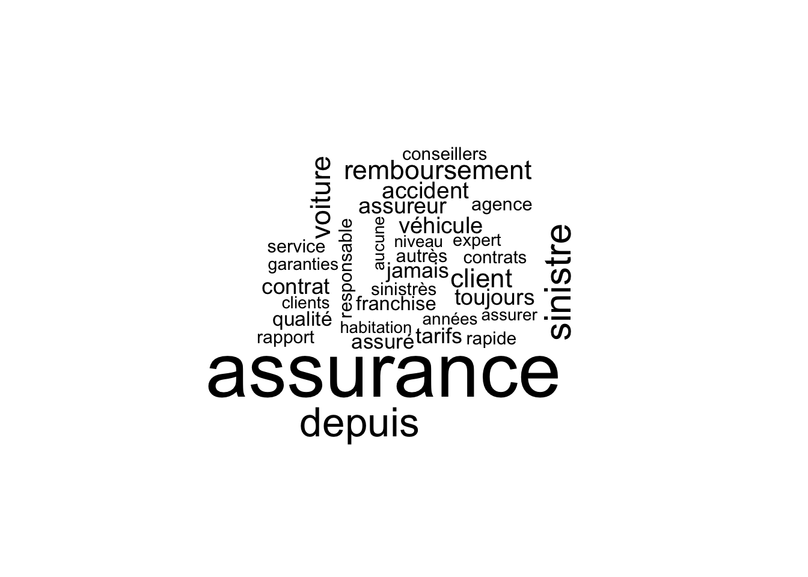

Analyse des commentaires clients
1 Introduction
Les sites d’avis de consommateurs recueillent des messages précieux venant des clients et peuvent être utilisé pour mieux comprendre les besoins des clients. Les données ont été récupérées sur le site d’opinions assurance, et la base de données comprend les variables suivantes :
Les données ont été récupérées sur le site d’opinions assurance, et la base de données comprend les variables suivantes :
- Date et heure de l’avis
- Note globale qui est la moyenne des notes selon 4 critères qui sont maintenant récupérées aussi:
- Prix: note sur le prix
- Service: note sur le service client
- Garantie: note sur les garanties
- Satisfaction: note sur la satisfaction générale
- Commentaire: l’avis du client rédigé en français, à noter qu’il y a parfois des fautes d’orthographe, ce qui nécessiterait des nettoyages à la main.
Différentes analyses sont réalisées sur ces données:
2 Exploration des données
## dateheure note.globale
## 1: 2016-05-30T17:52:37 2
## 2: 2016-05-25T13:31:18 1
## 3: 2016-05-25T04:05:51 2
## 4: 2016-05-23T09:30:43 2
## 5: 2016-05-16T20:45:44 2
## ---
## 1664: 2008-12-18T13:39:19 3
## 1665: 2008-12-18T13:29:23 3
## 1666: 2008-12-17T15:41:17 2
## 1667: 2008-12-17T11:10:05 3
## 1668: 2008-12-09T14:51:49 2
## lien.avis Prix Service Garantie
## 1: /macif-assurance-auto-avis-76170.html 2 2 2
## 2: /macif-assurance-auto-avis-76087.html 2 1 2
## 3: /macif-assurance-auto-avis-76077.html 3 3 2
## 4: /macif-assurance-auto-avis-76043.html 3 3 3
## 5: /macif-assurance-auto-avis-75933.html 1 2 4
## ---
## 1664: /macif-assurance-auto-avis-1349.html 3 3 3
## 1665: /macif-assurance-auto-avis-1345.html 3 4 4
## 1666: /macif-assurance-auto-avis-1264.html 2 2 2
## 1667: /macif-assurance-auto-avis-1201.html 5 1 5
## 1668: /macif-assurance-auto-avis-1141.html 3 1 4
## Satisfaction
## 1: 2
## 2: 1
## 3: 2
## 4: 2
## 5: 2
## ---
## 1664: 3
## 1665: 4
## 1666: 3
## 1667: 1
## 1668: 3
## commentaire
## 1: assuré depuis 25 ans a la macif je m'aperçois que tout les ans je paie plus chère que l'année précédente malgré la somme additionnel déduite ayant 50% et plus sur mes véhicules de plus ils ont oublier d'attribuer du bonus a ma fille qui est conducteur déclaré depuis prés de 3 ans .
## 2: J'ai demandé par téléphone à assurer mon véhicule pour une durée de 2 jours, le temps de le récupérer hors département. Ses messieurs d'Agen m'ont dit OK sans pb !!! j'avais trouvé une autre assurance moins chère et donc après ces 2 jours, j'ai basculé ma voiture auprès des autres assureurs et au moment d'en aviser la MACIF ses derniers m'informent qu'ils ne peuvent rien résilier, qu'ils ne font pas de contrat temporaire et que je dois m'"enquiller" 1 an d'assurance .... et la cerise sur le gâteau, ils me traitent quasiment de menteuse, que jamais ils n'auraient pu faire ce genre de contrat.
## 3: J'ai équipé mon habitation d'une alarme performante et normes agrées. Je pensais ainsi bénéficier d'une réduction de franchise pour l'assurance vol. Et bien non la MACIF exige que l'alarme soit reliée à une agence de télésurveillance et fournit même les coordonnées d'un prestataire.BIZNESS!!!
## 4: Assez satisfaite dans l'ensemble sauf au niveau des franchises , aucun courrier qui me précise l'augmentation de la franchise , je l ai découverte sur l'echeancier .
## 5: assurance de plus en plus chère, (d'après ce que j'ai vu sur le net, beaucoup mois chère pour les nouveaux...)\r\nça fait 39 ans que je suis à la Macif donc je suis fidélisé, donc je paye plein pot !!! avec ça, après tout ce temps, aucune indulgence pour le moindre souci. \r\nRemboursement convenable, sauf que chez eux on évite de réparer, on paye à l'argus, car ça revient moins cher.
## ---
## 1664: Bonjour,\r\nje suis au maximun des reductions que je puisse avoir\r\nc' est dommage que je n'ai pas d'autres ristournes!aucun gros sinistres depuis 38 ans de conduites !\r\n\r\n
## 1665: Peut être un peu plus cher, mais beaucoup de sastisfactions lors de problème aussi bien pour la voiture défense et recours ainsi que l'habitation\r\nnous en sommes très contents
## 1666: 20ans chez eux ....tant qu'il n'y a pas eu de soucis pas de problemes....\r\npuis en 1994 un gros accident materiel et depuis je traine \r\nils ont meme assurer un vehicule neuf en tiers collision en me signifiant ce tier dans le sas de sortie
## 1667: C'est une assurance, tant que tout va bien c'est très bien mais le jour où il vous arrive un pépin alors là tout bascule. 3 accidents dont 1 responsable, 1 50/50 et 1 non responsable et vous voilà mis à la porte.
## 1668: Je suis assuré à la MACIF pour mon véhicule et suite à un changement d'adresse pour mon déménagement j'ai du les contacter 2 fois par téléphone car ils ne l'vaient pas pris en compte alors que j'avais effectué mon changement de domicile sur le site web... le service client n'est pas très au point.
## plus
## 1: je cherche mais ne trouve pas
## 2: Il n'y en a pas !!!
## 3: Aucun intérêt
## 4: Les rembourssements sont rapides, et la qualité du services clients est irréprochable.
## 5: Remboursement convenable
## ---
## 1664:
## 1665:
## 1666:
## 1667:
## 1668:
## moins
## 1: l'accueil, le temps d'attente les réponses des conseillers au téléphone la conseillère ma répondu qu'il n'était pas habituer a assuré des véhicules comme la mienne que c'était le motif du prix exorbitant , j'ai une audi a3 sportback
## 2: interprétation des "lois" à leur avantage, aucune écoute des sociétaires !!!
## 3: Il vaut mieux être cambriolé et remboursé à fond....aux frais de l'adhérent?
## 4: Les Franchises sont de plus en plus élévées malgré les nombres d'années de cotisations.
## 5: Prix très haut au bout de quelque années de fidélité !\r\nAucune indulgence !
## ---
## 1664:
## 1665:
## 1666:
## 1667:
## 1668:3 Analyse des textes
Un package R de text-mining library(tm) existe pour l’analyse des textes. Il regroupent des fonctions couramment utilisées pour le nettoyage et exploration des données textuelles. Mais pour cette analyse, je n’ai pas utilisé ce package. Le fait de construire des fonctions à la main permet de mieux comprendre l’algorithme. Les lecteurs curieux pourront l’appliquer pour voir si les résultats sont les mêmes.
3.1 Analyse du corpus
## <<VCorpus>>
## Metadata: corpus specific: 0, document level (indexed): 0
## Content: documents: 1
##
## [[1]]
## <<PlainTextDocument>>
## Metadata: 7
## Content: chars: 265Document-Term Matrice
## <<DocumentTermMatrix (documents: 1668, terms: 7268)>>
## Non-/sparse entries: 44471/12078553
## Sparsity : 100%
## Maximal term length: 29
## Weighting : term frequency (tf)## <<DocumentTermMatrix (documents: 6, terms: 6)>>
## Non-/sparse entries: 3/33
## Sparsity : 92%
## Maximal term length: 9
## Weighting : term frequency (tf)
##
## Terms
## Docs attribués attribut atypique aubagne aucin aucun
## 500 0 0 0 0 0 0
## 501 0 0 0 0 0 0
## 502 0 0 0 0 0 2
## 503 0 0 0 0 0 1
## 504 0 0 0 0 0 0
## 505 0 0 0 0 0 1## <<DocumentTermMatrix (documents: 1668, terms: 403)>>
## Non-/sparse entries: 28900/643304
## Sparsity : 96%
## Maximal term length: 14
## Weighting : term frequency (tf)## <<DocumentTermMatrix (documents: 1, terms: 20)>>
## Non-/sparse entries: 1/19
## Sparsity : 95%
## Maximal term length: 10
## Weighting : term frequency (tf)
##
## Terms
## Docs accident accidents accueil afin agence agences ailleurs ainsi aller
## 1 0 0 0 0 0 0 0 0 0
## Terms
## Docs alors année années ans apres après assez assistance assurance
## 1 0 0 0 3 0 0 0 0 0
## Terms
## Docs assurances assure
## 1 0 0## [1] "des" "est" "les" "macif" "pas" "plus" "pour" "que" "une"
3.2 TF-IDF
## <<DocumentTermMatrix (documents: 1668, terms: 92)>>
## Non-/sparse entries: 18451/135005
## Sparsity : 88%
## Maximal term length: 14
## Weighting : term frequency - inverse document frequency (normalized) (tf-idf)## <<DocumentTermMatrix (documents: 12, terms: 20)>>
## Non-/sparse entries: 25/215
## Sparsity : 90%
## Maximal term length: 10
## Weighting : term frequency - inverse document frequency (normalized) (tf-idf)
##
## Terms
## Docs accident alors ans assurance assurances assuré assureur
## 1 0 0 0.16787959 0.00000000 0.00000000 0.1018688 0
## 2 0 0 0.00000000 0.02970724 0.00000000 0.0000000 0
## 3 0 0 0.00000000 0.00000000 0.00000000 0.0000000 0
## 4 0 0 0.00000000 0.00000000 0.00000000 0.0000000 0
## 5 0 0 0.04252949 0.04337256 0.00000000 0.0000000 0
## 6 0 0 0.00000000 0.04614103 0.00000000 0.0000000 0
## 7 0 0 0.00000000 0.09638348 0.00000000 0.0000000 0
## 8 0 0 0.08679489 0.00000000 0.00000000 0.0000000 0
## 9 0 0 0.00000000 0.00000000 0.07488984 0.0000000 0
## 10 0 0 0.17720623 0.00000000 0.00000000 0.0000000 0
## 11 0 0 0.05747229 0.05861157 0.00000000 0.0000000 0
## 12 0 0 0.00000000 0.00000000 0.00000000 0.1935507 0
## Terms
## Docs aucun auto avec avoir bien bon bonne bonus
## 1 0.0000000 0.00000000 0.00000000 0 0.00000000 0 0 0.09837156
## 2 0.0000000 0.00000000 0.00000000 0 0.00000000 0 0 0.00000000
## 3 0.0000000 0.00000000 0.00000000 0 0.08368904 0 0 0.00000000
## 4 0.2159106 0.00000000 0.00000000 0 0.00000000 0 0 0.00000000
## 5 0.0000000 0.00000000 0.04675163 0 0.00000000 0 0 0.00000000
## 6 0.0000000 0.00000000 0.00000000 0 0.00000000 0 0 0.00000000
## 7 0.0000000 0.08306932 0.00000000 0 0.00000000 0 0 0.00000000
## 8 0.0000000 0.00000000 0.00000000 0 0.00000000 0 0 0.00000000
## 9 0.0000000 0.00000000 0.00000000 0 0.00000000 0 0 0.00000000
## 10 0.0000000 0.00000000 0.00000000 0 0.00000000 0 0 0.00000000
## 11 0.0000000 0.00000000 0.00000000 0 0.00000000 0 0 0.00000000
## 12 0.1835240 0.00000000 0.00000000 0 0.00000000 0 0 0.00000000
## Terms
## Docs car cas cest cette cher
## 1 0.00000000 0 0.00000000 0.00000000 0.00000000
## 2 0.00000000 0 0.00000000 0.00000000 0.00000000
## 3 0.00000000 0 0.00000000 0.00000000 0.00000000
## 4 0.00000000 0 0.00000000 0.00000000 0.00000000
## 5 0.07297242 0 0.00000000 0.00000000 0.07407807
## 6 0.07763024 0 0.06717041 0.00000000 0.00000000
## 7 0.00000000 0 0.00000000 0.00000000 0.00000000
## 8 0.00000000 0 0.06442876 0.00000000 0.00000000
## 9 0.00000000 0 0.00000000 0.00000000 0.00000000
## 10 0.00000000 0 0.00000000 0.00000000 0.00000000
## 11 0.00000000 0 0.00000000 0.09314907 0.00000000
## 12 0.00000000 0 0.00000000 0.00000000 0.00000000
4 Ngrammes

## # A tibble: 36,182 × 2
## bigram n
## <chr> <int>
## 1 la macif 639
## 2 je suis 306
## 3 de la 232
## 4 en cas 194
## 5 pas de 185
## 6 que je 185
## 7 cas de 184
## 8 de sinistre 175
## 9 à la 156
## 10 a la 150
## # ... with 36,172 more rows4.1 Nettoyage des données textuelles
Une fonction fait maison pour nettoyer les textes.
4.2 Visualisation des fréquences des termes
On peut utiliser le wordcloud pour visualiser les mots les plus fréquents.

4.3 Table des fréquences des termes
Pour examiner les fréquences des mots de plus près, on peut afficher la table des fréquences.
4.4 Prédiction de la qualité en fonction des mots
Ainsi, il est possible de prédire la qualité du service en fonction des fréquences de certains mots. En effet, si sur le site-là, les avis textuels des clients sont accompagnés des notes numériques, selon d’autres sources de données, on n’a pas toujours une notation numérique. Ainsi, en faisant, une analyse des textes ou de la voix, on sera capable de donner une note numérique, comme indicateur.
Cela me fait penser à la détection de spam. Le principe est le même: en fonction de la densité de certains termes, on classifie la caractéristique des textes. Il fera l’objet d’un prochain article.
5 Conclusion
Grâce à quelques analyses rapides, on peut découvrir les principaux sujets dans les avis clients. De plus, les notes numériques données par les clients peuvent nous aider à définir les termes qui montrent des sentiments positifs, et d’autres qui montrent des négatifs. Parfois, ce sont des mots qui peuvent appaître comme neutres, mais le contexte pourrait leur donner certain sens caché.
En fonction des objectifs, les pistes d’analyse peuvent être différentes. Si vous avez des idées, n’hésitez pas à partager !
Copyright © 2016 Blog de Kezhan Shi